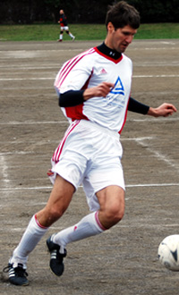
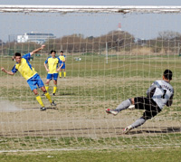

OLD STORIES - March 2008
Celts Safe for Another Season
Misato Sunday 30th March,
Celts cruised to comfortable 3-0 win over BFC Vagabonds on miserable Sunday afternoon in Misato. Having had a recent run of defeats in cup and league it was with a renewed optimism that Celts took to the task at hand. Despite 3 players deciding a night out in the "Pong" was conducive to pre-match preparations & also missing some key players, Celts were still fielding a strong line-up. more ...
SY.
Back to Reality!
Misato Sunday 30th March,
Lions' confidence was approaching borderline arrogance when they showed up with 1 substitute including 2 players that have not played for 3 months+ and 1 ill player, with crucial regular individuals missing from upfront (Zuhair), midfield (Raoof and Fahad), and defence (Khalil)....with also the experienced Mohammed ElSheikh and Kowa missing. more ...
HS.
B.E.F.C Survival Fight Begins.
OiFuto dirt, Sunday 30th March,
With just four league games remaining The British Embassy realize its going to take a massive effort to ensure their status in T.M.L League one next season. That survival fight began in earnest on Sunday against a slick Swiss Kickers side at Oifuto. more ...
KC.
|  |
|
Cap'n Kirk's Swiss Kickers can't regain past form! |
Swiss Fail to Produce Goods Again.
OiFuto dirt, Sunday 30th March,
Good day for a game, unfortunately it finished poorly as there were more missed chances than anything else. The Swiss should probably have held out for a 1-0 win but a remarkable substitution of a brand new player who had not touched a ball in two years, combined with that player’s beautiful pass to the opposition in the final third, allowed the BEFC to knock it past a stranded Peter for the tying goal. more ...
KN.
BFC On Last Legs??
Yoyogi Park, Saturday 22nd March,
A nice walk in Yoyogi park turns into perverted self mutilation for BFC before Evans rouses himself to save the day with a classy hat trick. BFC 4- British Embassy 3 more ...
GK.
 |
|
Paul Clarke's ariel superiority kept things tight at the back for Sala. |
Sala Edge Celts in Crucial Win
Misato Sunday 23rd March,
In a fairly fought match between two physical sides, Sala showed more attacking quality and better teamwork to come out on top at Misato. A goal in each half for Sala and a late penalty for Celts left the game at 2-1 come the final whistle, and left Sala still within striking distance of the top two.
The game had started brightly for Celts and saw them winning the vital midfield battle, overpowering Sala in the air and gaining a territorial advantage. From this fothold, they were able to launch numerous attacks in the first 15 minutes, although most of these attacks lacked any real guile on the deck, and with the Sala defence holding strong, Celts were only able to turn their superiority into a series of corner kicks. more ...
ST.
|  |
|
Turning Point - Hitoshi saves Jonathan's PK |
Five Star Hibs
Misato Sunday 23rd March,
Hibs made the trek out to Misato to take on the Geckoes expecting the usual hurricane winds and lunar surface, but the conditions weren't too bad - reasonably flat, nice weather and mild winds - so no excuses on that front. Both teams were up for it and tried to impose their style on the game early.
Hibs got some passing going and had a nice build up that led to an early shot by Kuni off the post, but then the hard-charging Gecks began to pick off our passes and force mistakes in our backfield. more ...
JA.
Swiss Make a Splash
Hachioji Park Thursday 20th March,
Swiss expectations for a good game on a nice pitch were high, especially since our last two outings had been windy howlers on pitches like tambos in Chiba. Unfortunately, one must remember that this is the TML, and it just cannot be allowed. With the Charity 6's postponed due to heavy rain, one may have been forgiven for thinking the 1 TML game of the day would also be cancelled. No such luck more ...
HS.
13th Month a Jinx!
YCAC Sunday 16th March,
Lions entered their 13th month undefeated in all 11-aside competitions, and with winning the last 10 TML games (including last season's finale), against a strong France team with 5 wins on the trot, this was destined to be match of the season. more ...
HS.
Mikey Mops Up.
 |
|
Mikey Taw slots home his 2nd of the day as YCAC ease past the Jets. |
Hachioji Park Suday 9th March,
The prospect of an hour and a half journey from Yokohama proved too much for some of our teammates but the bare 11 hardy souls who braved the trip made it worthwhile, taking home the 3 points that will keep YCAC in the top flight next year.
Seems a bit soft to talk about relegation after the 3 points shot the club up to 4th spot but without a now perfect record against the bottom 2 teams YCAC would have been deep in the mire with them.. more ...
ST.
Winning Ugly!
YCAC Saturday 8th March,
Hibs thought it would be a physical game against the big Celts team on the lunar surface at YCAC. Eight yellow cards and two reds later, it was. more ...
JA.
Mugged Again!
YCAC Sunday 9th March,
After a big win the previous week, our game against Albion provided a good reality check and re-inforced Managements wise decision to focus on the Cup this season!
The previous match between the two clubs ended in a 0-1 defeat for YCAC2nds, I wasn't there but heard that it was a good contest that arguably we could have won. more ...
SM.
Old Boys On Top Despite Missing Members
YCAC Sunday 9th March,
The phrase "Famous Last Stands" usually brings to mind the image of valiant but ultimately unsuccessful combat against overwhelming odds - Custer's regiment defended stoutly but ended up getting some very unbecoming haircuts from Sitting Bull's braves, and even the fabled 300 Spartans were ultimately kebabbed by the Persian hordes. But in the Battle of Yamate Hill on Sunday the Albion Old Boys overcame a two-man disadvantage in the first-half and a hometown gale in the second to record an unlikely come-from-behind win against YCAC 2nds. more ...
TC.
 |
|
The facial expressions say it all, and it didn't get much better!!! |
There Will Be Blood
Hachioji Park Sunday 9th March,
Sala kept themselves in the hunt for the TML title with a hard fought victory over Geckoes in Saitama on Sunday.
An emotional day saw touching drama on the touchline as Charles announced his immediate retirement from the Chiba side, having been handpicked to lead an expedition to find the world’s longest snake.
Worse was to follow when it became clear that Clarkey would not be coming due to an accident with a piano (Dropped on his head?)
Nevertheless Sala threw themselves into the action from the start, fighting back the tears, and went one up inside the first ten minutes.
Some nice interplay between Brookey and Pete on the right flank saw the naturalized Englishman cut inside and arrow a wicked 20 yard shot into the top right corner. more...
RC.
YCAC Snatch Defeat from the Jaws of Victory
ASIJ Sunday 2nd March,
Plenty of goals between YCAC and BFC yet again as a Shosuke inspired BFC turned around a 3-1 deficit in the last 25 minutes to claim all 3 points in Chofu on Sunday
Perfick it was at ASIJ, Ma, absolutely perfick. Not too hot, not too cold, no wind to speak of and the pitch, omg, the pitch. That's the best line I've run up and down with my flag all year. ASIJ, with a little imagination, almost has a stadium feel about it. more ...
ST.
'Bonjour' from Shetland!
ASIJ Sunday 2nd March,
From Shetland with love. Garry 'Gazza' Robertson went from plonker to top cat with a howitzer free kick to complete a gritty 4-3 win over YCAC, sending BFC four points clear at the top of TML1 more...
AH.
Mushashi Shigaki Revisited
ASIJ Sunday 2nd March,
Imagine the scene, you go to a local izakaiya for a few beers after a game and get back to Tokyo late on a Sunday evening only to realise you have left your wallet in the depths of west Tokyo and need to make a 2 hour round trip to get it back!!! What can make that seem OK? Well how about a 4-3 victory against YCAC or better still a 4-3 victory when you have come back from being 3-1 down……… more...
PL.
Super Vags!
OiFuto Dirt Saturday 1st March,
BFC Vagabonds did their brothers in arms British FC a big favour this weekend by holding 2nd placed Hibs 1-1 on the old 'dirty' at OiFuto. Only a late strike - and what a strike - by Mick McGirr saved the greens a point! For the poets amongst you(or those who appreciate poetry) read on more from the American bard...
TM.